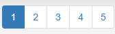

<< Home
Înainte de a face tema, consultați lecția pentru inspirație.
Tema A
-
Creați o aplicație de tip consolă care citește de la tastatură un număr natural n
-
Programul apoi afișează toate numerele naturale impare mai mici sau egale decât numărul dat n
-
Exemplu:
n = 10 => 1 3 5 7 9
n = 13 => 1 3 5 7 9 11 13
Tema B
-
Creați o aplicație de tip consolă care citește de la tastatură un număr natural n și o cifră c.
-
Programul apoi afișează dacă numărul dat n conține sau nu cifra dată c.
-
Exemplu:
n = 1514251,
c = 5 => DA
n = 1214251, c = 7 => NU
n = 1214251,
c = 1 => DA
Tema C
-
Compuneți o problemă a cărei rezolvare să folosească cel puțin odată instrucțiunea while.
-
Folosiți-vă imaginația. Problema compusă nu trebuie să fie asemănătoare celor date până acum.
-
Scrieți codul c++ care rezolvă problema.
Tema D
-
Rezolvați o problemă la alegere din această
listă
-
Puteți naviga între pagini de la 1 la 5

-
Dacă vă creați cont pe site, puteți testa soluția dată pentru a primi un punctaj.
Timp de lucru: 1 săptămână
Compilator online
Video cu lecția